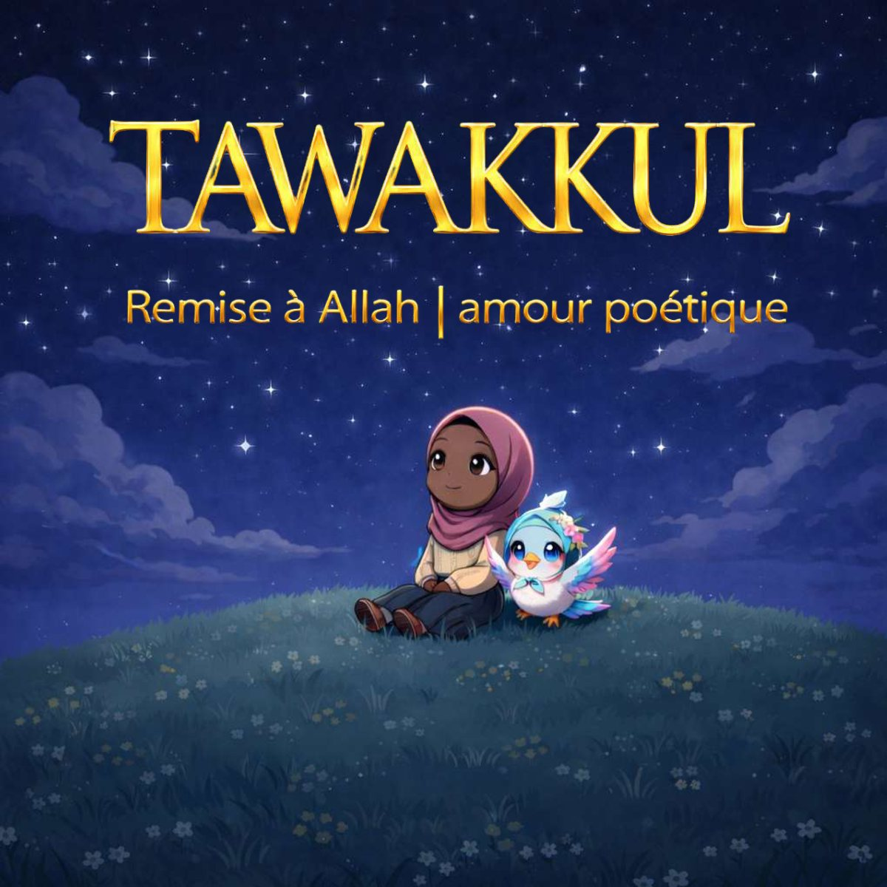
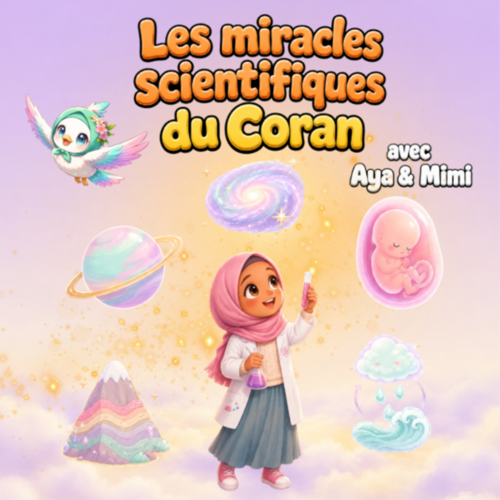
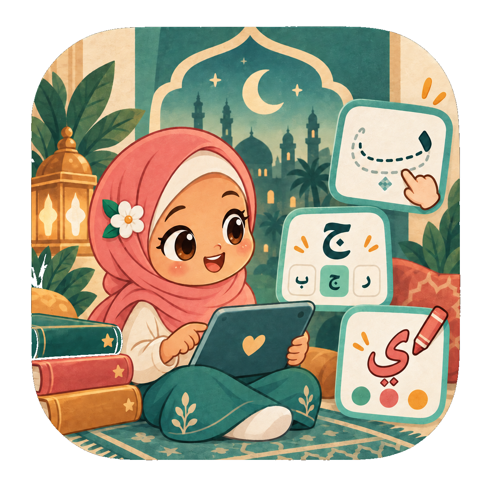
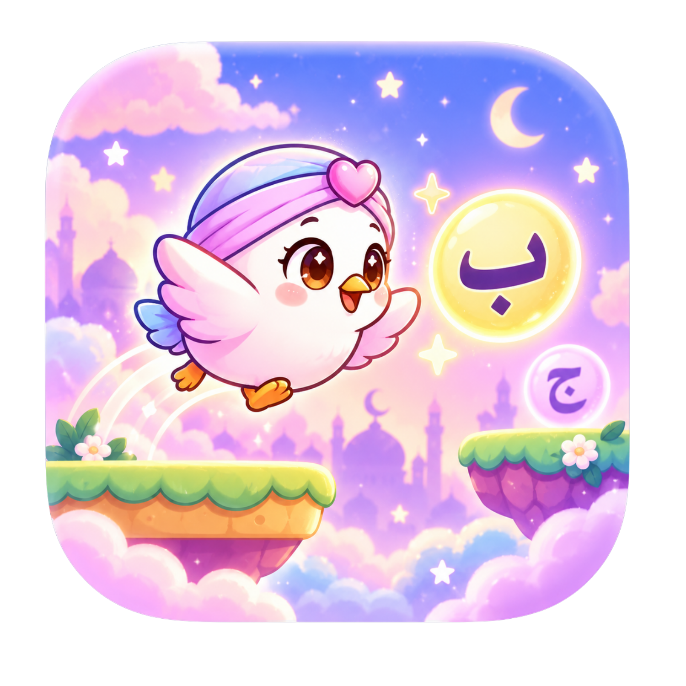

Un écran qui vous veut du bien.
Des histoires, des jeux et de petits pas dans l’éducation islamique de votre enfant. Essayez ensemble, sans compte.
📖 Lire

Tawakkul
Une histoire sur la confiance en Allah.
Ouvrir le livre →5 pages offertes
Les miracles du Coran
Éveiller la curiosité, ensemble.
Ouvrir le livre →🎨 Créer
Hijabi Girls
Choisir une page et lui donner ses couleurs.
Colorier →🌱 Apprendre
Le jardin du Coran
Al-Fatiha, Al-Ikhlas et Al-Falaq : lire, écouter et répéter.
Entrer dans le jardin →3 lettres offertes
J’apprends les lettres
Alif, Bâ et Tâ : écouter, tracer et colorier.
Commencer →✨ Jouer et s’apaiser

Mimi Fly
Un voyage pour jouer avec les lettres.
Jouer →2 invocations offertes
Safe Place
Un petit moment de douceur avec votre enfant.
Retrouver la paix →Vous avez aimé ce premier moment ensemble ?
Les essais sont sauvegardés sur cet appareil.